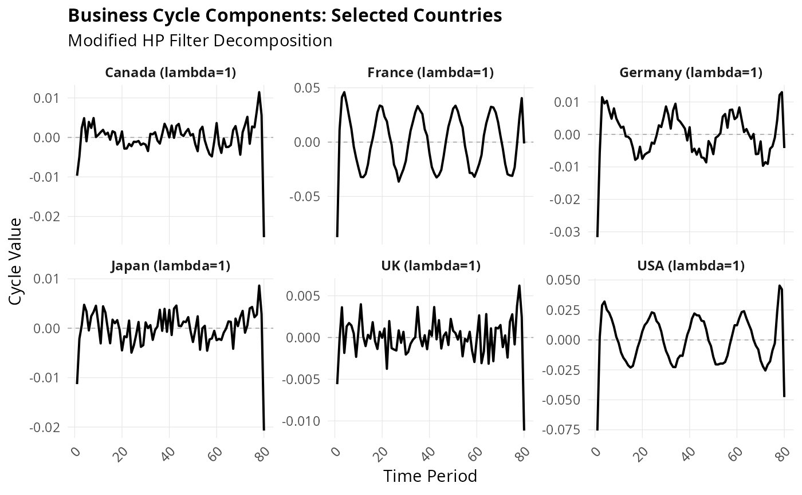

Create a ggplot2 visualization of batch filter results. Useful for comparing multiple series' cyclical components or trends.
Usage
plot_batch(x, show = c("cycle", "trend"), facet = TRUE, highlight = NULL)Arguments
- x
Result from
mhp_batch.- show
Character. What to show: "cycle" (default) or "trend".
- facet
Logical. If TRUE, use faceting; if FALSE, overlay series.
- highlight
Character vector. Names of series to highlight (others shown faintly).
Details
Creates visualizations for batch processing results: - Cycle plot: Shows business cycle components across series - Trend plot: Shows trend components across series
Options for faceting or overlay, with highlighting capability.
Examples
set.seed(456)
# Create multi-country dataset
n_time <- 80
countries <- c("USA", "UK", "Germany", "France", "Japan", "Canada")
gdp_data <- matrix(nrow = n_time, ncol = length(countries))
for (i in seq_along(countries)) {
# Different growth rates and cycle patterns
growth <- runif(1, 0.3, 1.0)
cycle_freq <- 20 + runif(1, -5, 15)
cycle_amp <- runif(1, 0.5, 2.5)
gdp_data[, i] <- 100 + cumsum(rnorm(n_time, mean = growth / 100, sd = 0.4 / 100)) +
cycle_amp * sin(2 * pi * (1:n_time) / cycle_freq)
}
colnames(gdp_data) <- countries
results <- mhp_batch(gdp_data, max_lambda = 10000)
if (require(ggplot2)) {
# Show cycles with faceting
plot_batch(results, show = "cycle", facet = TRUE)
# Show trends overlaid
plot_batch(results, show = "trend", facet = FALSE)
# Highlight specific countries
plot_batch(results, show = "cycle", facet = FALSE, highlight = c("USA", "Germany"))
# Customized plot
p <- plot_batch(results, show = "cycle", facet = TRUE)
p <- p +
ggplot2::labs(
title = "Business Cycle Components: Selected Countries",
subtitle = "Modified HP Filter Decomposition"
) +
ggplot2::theme(
strip.text = ggplot2::element_text(face = "bold", size = 9),
axis.text.x = ggplot2::element_text(angle = 45, hjust = 1)
)
print(p)
}
#> Warning: Duplicated aesthetics after name standardisation: linewidth
#> Warning: Duplicated aesthetics after name standardisation: linewidth
